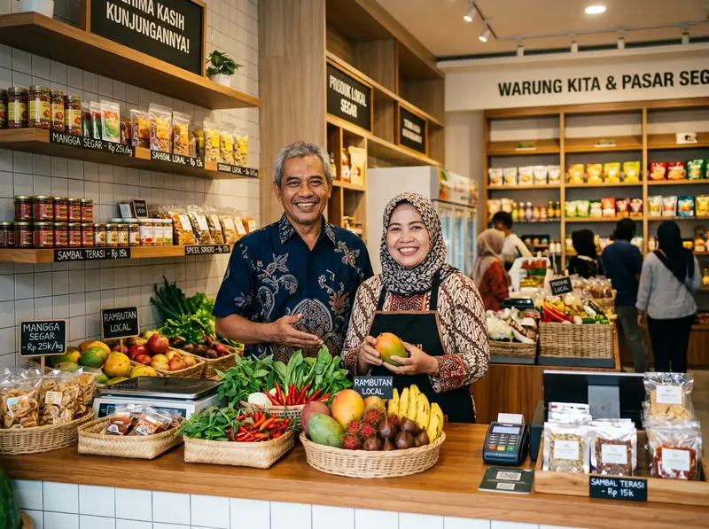
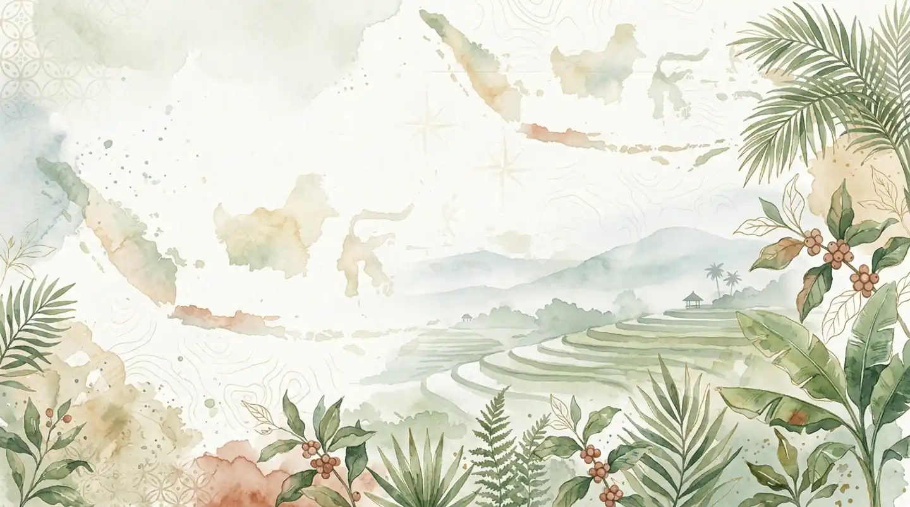
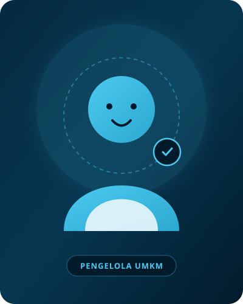

Dukung Usaha Tetangga, Belanja Langsung ke Warung Lokal
Temukan etalase makanan sedap, warung sembako terdekat, hingga jasa terpercaya di sekitar Anda. Pesan instan langsung terhubung ke WhatsApp penjual!

Media UMKM
Kami membantu mempromosikan dan menghubungkan berbagai potensi usaha lokal warga melalui konsep etalase digital yang praktis, interaktif, dan disesuaikan dengan kebutuhan lingkungan. Setiap warung, kedai, hingga penyedia jasa didaftarkan secara gratis tanpa biaya komisi atau perantara.
Didukung oleh semangat gotong royong dan transaksi instan langsung via WhatsApp penjual asli, kami menghadirkan platform bersama yang memudahkan warga sekitar menemukan produk berkualitas, kuliner lezat, hingga layanan harian terbaik dari tetangga sendiri.
Selengkapnya Tentang KamiAlur Kemitraan & Sponsorship Media UMKM
Proses kurasi resmi untuk mendaftarkan, menyponsori, dan menampilkan mitra UMKM terpercaya.
Setiap usaha melewati tahap persetujuan & verifikasi resmi dari pengelola sebelum ditayangkan.
Mitra UMKM terpilih mendapat ruang etalase khusus & promosi digital terdepan di platform.
Tombol pemesanan terhubung instan langsung ke nomor WhatsApp resmi masing-masing mitra.
Tanpa biaya komisi transaksi, 100% pendapatan penjualan milik penuh pemilik usaha.
Produk Unggulan Warga
Jelajahi keanekaragaman produk kuliner, kerajinan tangan, dan kebutuhan harian lokal.
Kedai Kopi Janari
Kopi susu aren asli racikan biji kopi pilihan lokal.

Seblak Pedas Bu Ratna
Seblak prasmanan kuah rempah gurih pedas khas.

Mekar Batik Nusantara
Kain batik tulis dan cap pewarna alam buatan warga.
Rajut Handcraft Neng Ayu
Tas dan dompet rajut benang nilon buatan tangan.
Laundry Kilat Bersih
Cuci kilat 3 jam express dengan parfum harum tahan lama.
Etalase Usaha Warga
Daftar warung dan toko lokal yang aktif melayani pesanan.
Kedai Kopi Janari
Menyajikan olahan kopi lokal, roti bakar, dan camilan santai tempat nongkrong hangat warga.
- Indonesia (Layanan Terbuka)
- 08.00 – 22.00 WIB
Seblak Pedas Bu Ratna
Seblak prasmanan dengan 20+ varian topping kerupuk, dumpling, sosis, dan kuah rempah pedas mantap.
- Antapani, Bandung
- 10.00 – 21.00 WIB
Laundry Kilat Bersih
Layanan cuci lipat, cuci setrika express 3 jam selesai dengan formula deterjen higienis dan harum.
- Layanan Antar-Jemput
- 07.00 – 20.00 WIB

Batik Tulis Mekar Jaya
Kain batik motif khas tradisional dan kemeja pria buatan pengrajin lokal berstandar halus.
- Indonesia (Kirim Seluruh Wilayah)
- 09.00 – 17.00 WIB

Dapur Sambal Nusantara
Paket nasi ayam bakar, aneka sambal kemasan higienis, dan katering acara rumahan rasa istimewa.
- Pesan Antar Makanan
- 09.00 – 21.00 WIB

Toko Kelontong Berkah
Penyedia sembako murah, beras, minyak goreng, dan kebutuhan dapur harian komplit dekat rumah.
- Pengiriman Cepat Warga
- 06.30 – 21.30 WIB
Jelajahi Profil Lengkap 10 Mitra UMKM Indonesia
Klik nama usaha untuk melihat profil katalog, daftar menu harga, lokasi, dan kontak WhatsApp langsung:
Kata Warga & Pemilik Usaha
Kesan dan manfaat nyata yang dirasakan oleh penjual dan pembeli lokal.
"Sejak warung kopi saya terdaftar di Media UMKM, tetangga komplek sebelah jadi tahu dan langganan pesan kopi lewat WhatsApp. Sangat membantu tanpa dipotong biaya komisi!"
Pak Joko
Pemilik Kedai Kopi Janari
"Sangat praktis! Pembeli tinggal klik tombol WhatsApp langsung terhubung ke nomor HP saya. Daftar harga dan lokasi warung seblak saya tampil rapi."
Bu Ratna
Pemilik Seblak Pedas Bu Ratna
Pertanyaan Umum (FAQ)
Informasi pendaftaran dan cara kerja platform Media UMKM.
Punya Usaha Rumahan atau Warung Lokal?
Daftarkan tokomu gratis hari ini agar makin dikenal oleh tetangga dan warga di sekitar lingkunganmu!
Daftarkan Usahaku SekarangHalo! Mau mendaftarkan usaha warungmu atau butuh bantuan mencari produk lokal?
Baru saja